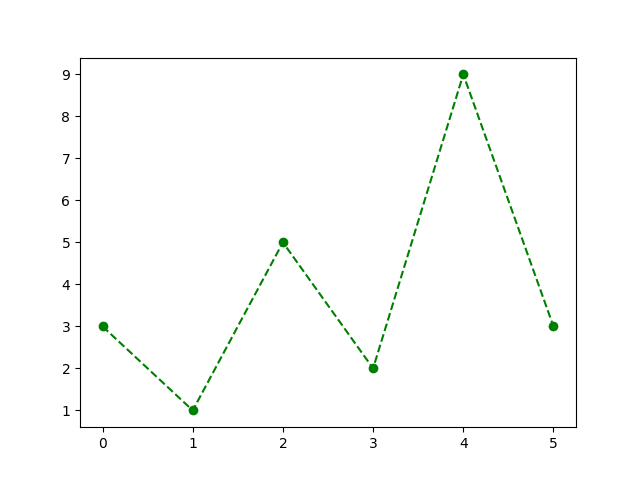

Matplotlib
- Matplotlib is an extensive Python library commonly used to generate different types of plots.
- Matplotlib is an external library and to use it we have to install it.
- If you use Thonny, go to Tools -> Manage packages. Type matplotlib on the
search bar and press “Find package from PyPI”. Then click Install.
- If you do not have Thonny, you can do so by typing the following commands in the terminal:
python -m pip install -U pip python -m pip install -U matplotlib
matplotlib.pyplot
-
matplotlib.pyplot is a module in the package Matplotlib.
-
This is the module we’ll be using to create plots.
-
To use it, we first need to import it
import matplotlib.pyplot as plt -
For more details: https://matplotlib.org/devdocs/api/pyplot_summary.html
Example – A Line plot
We can use the function plot to create a line plot between the points in the input sequence.
1import matplotlib.pyplot as plt23some_numbers = [3, 1, 5, 2, 9, 3]4plt.plot(some_numbers)5plt.show() # display figure

Note that:
- We have provided only one input to the function plot.
- If we do that, then the input values are going to be considered as the y-coordinates. Their corresponding x-coordinates are the indices of the list.
- In the example, we plot the following points:
Example - two inputs
1import matplotlib.pyplot as plt23x_coord = range(0, 10, 2)4y_coord = [0, 0, 9, 8, 2]5plt.plot(x_coord, y_coord)6plt.show()

Example - a linear function
Using pyplot, we can plot the graph of the linear function .
1import matplotlib.pyplot as plt23x_coord = range(15)4y_coord = [x + 5 for x in x_coord]56plt.plot(x_coord, y_coord)7plt.show()

Plot title and axis labels
We can add more information about our plots to the figure.
-
plt.title(label): takes as argument a string and adds the title label to the figure.
-
plt.xlabel(label): takes as argument a string and sets the label for the x-axis.
-
plt.ylabel(label): takes as argument a string and sets the label for the y-axis.
-
We can choose the font size of the labels, by passing the info as argument as follows:
plt.title("First plot", fontsize=22)
1import matplotlib.pyplot as plt23x_coord = range(15)4y_coord = [x + 5 for x in x_coord]56plt.plot(x_coord, y_coord)78plt.title("First plot", fontsize=20)9plt.xlabel("x", fontsize=14)10plt.ylabel("y = x + 5", fontsize=14)1112plt.show()
Colors and markers
- We can chose the style/color of the plots, the style/size of the markers, etc.
- Here is just a taste:


You can check out the documentation here:
https://matplotlib.org/stable/api/_as_gen/matplotlib.pyplot.plot.html
How to use these?
- The function plot can take as arguments one or two lists (for x and y coordinates) and a format string.
- The format string consists of three parts: [marker][line][color]. Each part is optional.
1import matplotlib.pyplot as plt23some_numbers = [3, 1, 5, 2, 9, 3]45# circle marker, dashed line, green6plt.plot(some_numbers, "o--g")7plt.show() # display figure
Multiple plots in same figure
1import matplotlib.pyplot as plt2from math import sin, cos, radians34x_coord = range(0, 540, 20)5y_sin = [sin(radians(x)) for x in x_coord]6y_cos = [cos(radians(x)) for x in x_coord]78# + marker, blue color and use label for legend9plt.plot(x_coord, y_sin, '+b', label="sin(x)")1011# magenta color and use label for legend12plt.plot(x_coord, y_cos, 'm', label="cos(x)")1314plt.legend() # show legend15plt.show()

Saving a figure
- We can use the function plt.savefig() to save the figure we created.
- The function takes as argument the file name (a string).
1import matplotlib.pyplot as plt2from math import sin, radians34x_coord = range(0, 540, 20)5y_sin = [sin(radians(x)) for x in x_coord]67plt.plot(x_coord, y_sin, 'm')89# the figure won't be displayed, # but saved in y_sin.png10plt.savefig("myplot.png")
Bar Plots
When working with data that can be broken down into categories, it might be useful for us to use a bar plot instead.
Consider the following example:
1import matplotlib.pyplot as plt23mtl_pop = [1293992, 1080545, 1015420, 1016376, 1620693, 1704694]4years = ['1966', '1976', '1986', '1996', '2006', '2016']56plt.bar(years, mtl_pop)78plt.title("Population of Montreal")9plt.show()

NumPy and Matplotlib
Matplotlib functions work with NumPy arrays as well.
1import numpy as np2import matplotlib.pyplot as plt34x_values = np.linspace(0, 8, 501)5y_values = np.sin(x_values ** 2) # computes sin(x^2)6plt.plot(x_values, y_values)7plt.show()